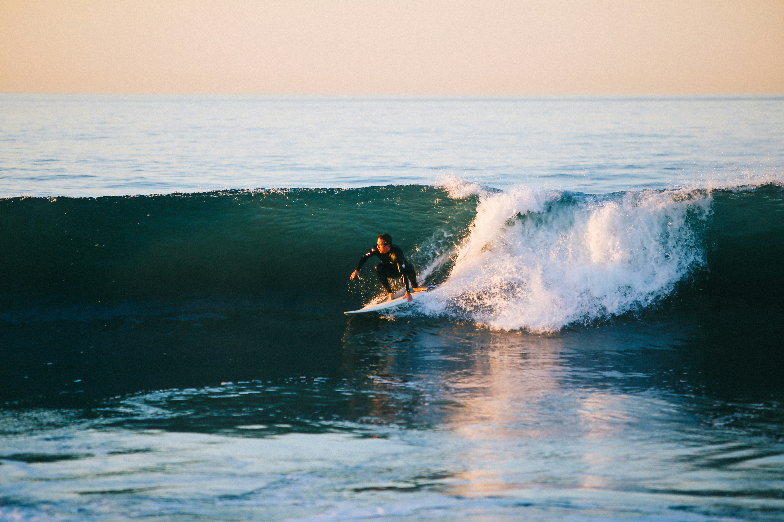
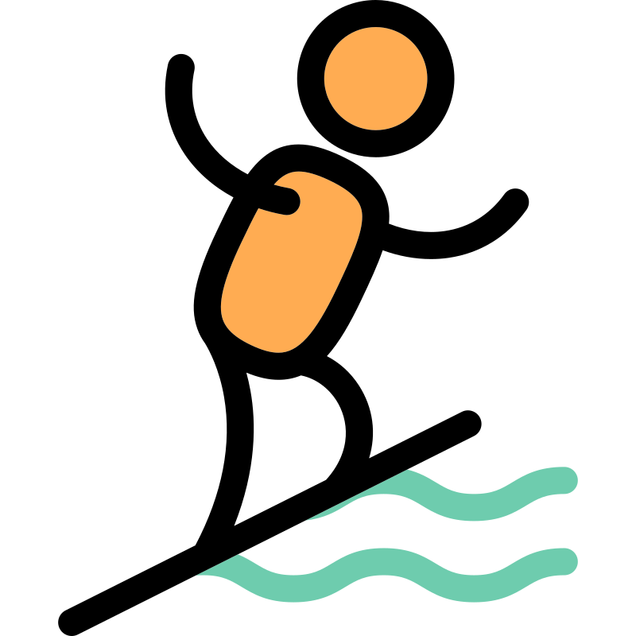

Warm Weather Sport
Surfing is easiest to learn in calm, warm conditions. Start at a beginner-friendly beach with smaller waves and lots of space.
This page covers the essentials to start surfing: safety, gear, and a simple step-by-step plan so your first sessions feel less confusing.

Surfing is easiest to learn in calm, warm conditions. Start at a beginner-friendly beach with smaller waves and lots of space.
A long soft-top board is easier and safer for learning. Use a leash, wax (or a traction pad), and a wetsuit if the water is cold.

Learn in stages: practice paddling, then catching whitewater, then the pop-up. Standing up comes easier after you can control the board and your balance.

Most beginners try to stand too early and look down at their feet. Focus on timing and looking forward. Your body goes where your eyes go.
Check the waves and weather at Surfline
Start close to shore in broken waves (whitewater). Practice laying down, paddling straight, and riding the foam without standing. The goal is control and comfort.
Once you can ride straight, practice a slow pop-up. If you fall, it’s normal; focus on repeating the motion safely and consistently.
Do pop-up practice on the sand first, then in the water. Try to angle your board slightly left or right so you’re not always going straight in.
Keep your knees slightly bent and your chest up. If the board feels wobbly, you may be standing too far back or too stiff.
If you can, book one beginner lesson. If not, start with whitewater, practice pop-ups on land, and keep sessions short so you don’t burn out.